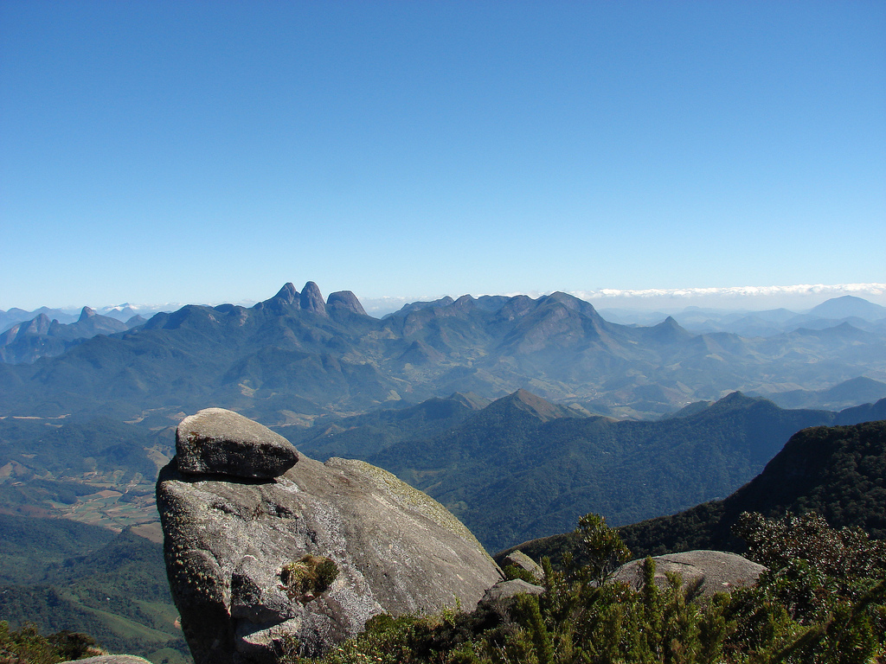
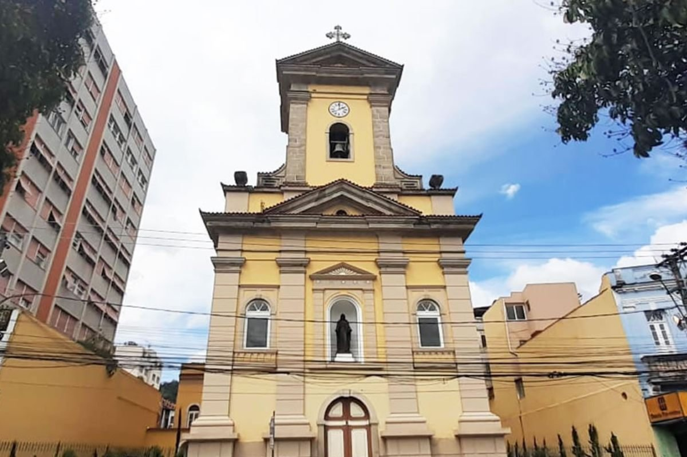
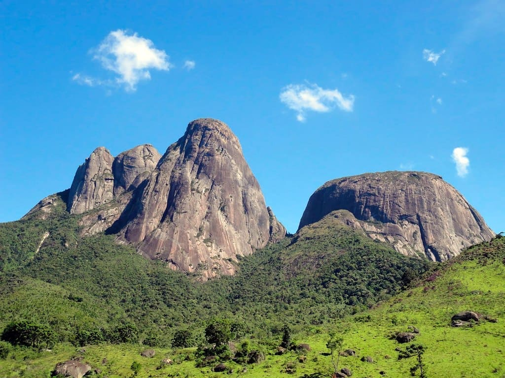

1. Pico da Caledônia
Um dos pontos mais altos da região, o Pico da Caledônia oferece vistas panorâmicas espetaculares da Serra Fluminense. A subida pode ser recompensadora, presenteando os visitantes com um horizonte de montanhas e vales cobertos pela Mata Atlântica. É um local perfeito para os amantes de trilhas e da natureza.
Bom para:

2. Catedral São João Batista
Localizada no coração da cidade, a Catedral de São João Batista é um marco histórico e arquitetônico de Nova Friburgo. Sua imponente fachada e interior ricamente decorado refletem a importância da fé e da história local.
Bom para:

3. Parque Estadual Dos Tres Picos
Para os amantes do ecoturismo e da aventura, o Parque Estadual dos Três Picos é um destino imperdível. Com trilhas desafiadoras, cachoeiras e uma rica biodiversidade, o parque oferece a oportunidade de explorar a beleza natural da Mata Atlântica em seu estado mais preservado.
Bom para: